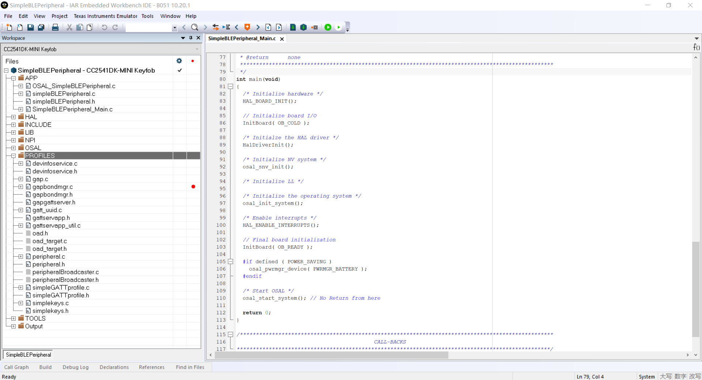
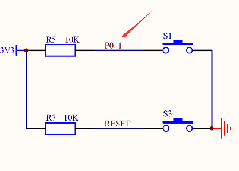
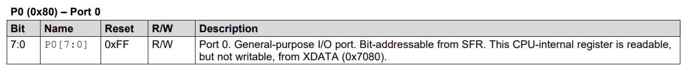
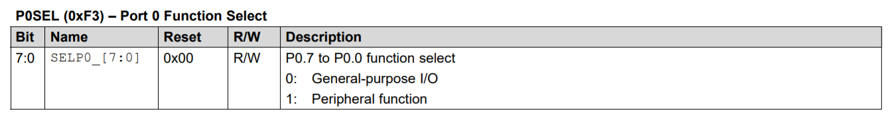
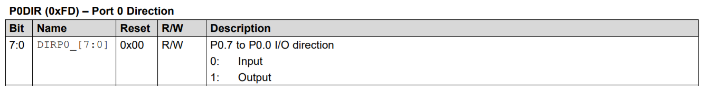
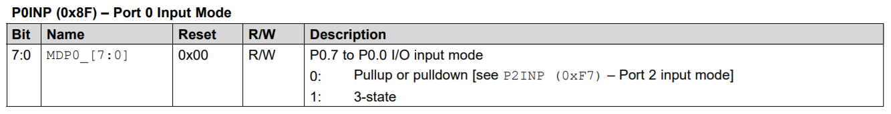
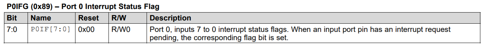
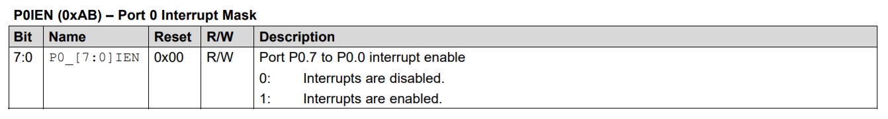

SimpleBLEPeripheral Key Hack
SimpleBLEPeripheral示例分析
参考文档
Source Code
C:\Texas Instruments\BLE-CC254x-1.4.2.2\Projects\ble\SimpleBLEPeripheral

HAL Key To Start
Hardware
Schematic
Register






Code Hack
int main(void)HalDriverInit()HalKeyInit()void HalKeyInit( void ) { halKeySavedKeys = 0; // Initialize previous key to 0. #if defined ( CC2540_MINIDK ) HAL_KEY_SW_1_SEL &= ~(HAL_KEY_SW_1_BIT); /* Set pin function to GPIO */ HAL_KEY_SW_1_DIR &= ~(HAL_KEY_SW_1_BIT); /* Set pin direction to Input */ // 设置GPIO HAL_KEY_SW_2_SEL &= ~(HAL_KEY_SW_2_BIT); /* Set pin function to GPIO */ // 设置为输入 HAL_KEY_SW_2_DIR &= ~(HAL_KEY_SW_2_BIT); /* Set pin direction to Input */ #else [...省略] #if defined ( CC2540_MINIDK ) /* Rising/Falling edge configuratinn */ PICTL |= HAL_KEY_SW_1_EDGEBIT; /* Set the edge bit to set falling edge to give int */ // 打开中断 HAL_KEY_SW_1_IEN |= ( HAL_KEY_SW_1_IENBIT | HAL_KEY_SW_2_IENBIT ); /* enable CPU interrupt */ #endif } // 注册中断处理函数 HAL_ISR_FUNCTION( halKeyPort0Isr, P0INT_VECTOR ) { HAL_ENTER_ISR(); #if defined ( CC2540_MINIDK ) if ((HAL_KEY_SW_1_PXIFG & HAL_KEY_SW_1_BIT) || (HAL_KEY_SW_2_PXIFG & HAL_KEY_SW_2_BIT)) #else if (HAL_KEY_SW_6_PXIFG & HAL_KEY_SW_6_BIT) #endif { // 处理中断 halProcessKeyInterrupt(); } [...省略] }
halProcessKeyInterrupt()void halProcessKeyInterrupt (void) { bool valid=FALSE; #if defined ( CC2540_MINIDK ) if( HAL_KEY_SW_1_PXIFG & HAL_KEY_SW_1_BIT) /* Interrupt Flag has been set by SW1 */ { HAL_KEY_SW_1_PXIFG = ~(HAL_KEY_SW_1_BIT); /* Clear Interrupt Flag */ valid = TRUE; } if (HAL_KEY_SW_2_PXIFG & HAL_KEY_SW_2_BIT) /* Interrupt Flag has been set by SW2 */ { HAL_KEY_SW_2_PXIFG = ~(HAL_KEY_SW_2_BIT); /* Clear Interrupt Flag */ valid = TRUE; } #else [...省略] if (valid) { // 触发Hal_TaskID任务事件 osal_start_timerEx (Hal_TaskID, HAL_KEY_EVENT, HAL_KEY_DEBOUNCE_VALUE); } }
uint16 Hal_ProcessEvent( uint8 task_id, uint16 events )uint16 Hal_ProcessEvent( uint8 task_id, uint16 events ) { uint8 *msgPtr; (void)task_id; // Intentionally unreferenced parameter [...省略] if (events & HAL_KEY_EVENT) { #if (defined HAL_KEY) && (HAL_KEY == TRUE) /* Check for keys */ // 获取键值 HalKeyPoll(); /* if interrupt disabled, do next polling */ if (!Hal_KeyIntEnable) { osal_start_timerEx( Hal_TaskID, HAL_KEY_EVENT, 100); } #endif return events ^ HAL_KEY_EVENT; } [...省略] }
HalKeyPoll()void HalKeyPoll (void) { uint8 keys = 0; uint8 notify = 0; #if defined (CC2540_MINIDK) if (!(HAL_KEY_SW_1_PORT & HAL_KEY_SW_1_BIT)) /* Key is active low */ { keys |= HAL_KEY_SW_1; } if (!(HAL_KEY_SW_2_PORT & HAL_KEY_SW_2_BIT)) /* Key is active low */ { keys |= HAL_KEY_SW_2; } #else [...省略] /* Store the current keys for comparation next time */ halKeySavedKeys = keys; /* Invoke Callback if new keys were depressed */ if (notify && (pHalKeyProcessFunction)) { // 发送按键触发信息 (pHalKeyProcessFunction) (keys, HAL_KEY_STATE_NORMAL); } }
InitBoard( OB_READY )HalKeyConfig( OnboardKeyIntEnable, OnBoard_KeyCallback)pHalKeyProcessFunction = cbackvoid OnBoard_KeyCallback ( uint8 keys, uint8 state )void OnBoard_KeyCallback ( uint8 keys, uint8 state ) { uint8 shift; (void)state; // shift key (S1) is used to generate key interrupt // applications should not use S1 when key interrupt is enabled shift = (OnboardKeyIntEnable == HAL_KEY_INTERRUPT_ENABLE) ? false : ((keys & HAL_KEY_SW_6) ? true : false); // 发送按键消息 if ( OnBoard_SendKeys( keys, shift ) != SUCCESS ) [...省略] }
OnBoard_SendKeys( keys, shift ) != SUCCESSuint8 OnBoard_SendKeys( uint8 keys, uint8 state ) { keyChange_t *msgPtr; if ( registeredKeysTaskID != NO_TASK_ID ) { // Send the address to the task // 分配一个消息体 msgPtr = (keyChange_t *)osal_msg_allocate( sizeof(keyChange_t) ); if ( msgPtr ) { msgPtr->hdr.event = KEY_CHANGE; msgPtr->state = state; msgPtr->keys = keys; // 发送按键消息给SimpleBLEPeripheral_ProcessEvent任务 osal_msg_send( registeredKeysTaskID, (uint8 *)msgPtr ); } return ( SUCCESS ); } else return ( FAILURE ); }
osal_init_system()osalInitTasks()SimpleBLEPeripheral_Init( taskID )RegisterForKeys( simpleBLEPeripheral_TaskID )uint8 RegisterForKeys( uint8 task_id ) { // Allow only the first task if ( registeredKeysTaskID == NO_TASK_ID ) { // 注册按键事件处理任务ID，相当于指定前面发送给SimpleBLEPeripheral_ProcessEvent任务的任务id registeredKeysTaskID = task_id; return ( true ); } else return ( false ); }
uint16 SimpleBLEPeripheral_ProcessEvent( uint8 task_id, uint16 events )simpleBLEPeripheral_ProcessOSALMsg( (osal_event_hdr_t *)pMsg )simpleBLEPeripheral_HandleKeys( ((keyChange_t *)pMsg)->state, ((keyChange_t *)pMsg)->keys )static void simpleBLEPeripheral_HandleKeys( uint8 shift, uint8 keys ) { uint8 SK_Keys = 0; VOID shift; // Intentionally unreferenced parameter if ( keys & HAL_KEY_SW_1 ) { SK_Keys |= SK_KEY_LEFT; } if ( keys & HAL_KEY_SW_2 ) { SK_Keys |= SK_KEY_RIGHT; // if device is not in a connection, pressing the right key should toggle // advertising on and off // Note: If PLUS_BROADCASTER is define this condition is ignored and // Device may advertise during connections as well. #ifndef PLUS_BROADCASTER if( gapProfileState != GAPROLE_CONNECTED ) { #endif // PLUS_BROADCASTER uint8 current_adv_enabled_status; uint8 new_adv_enabled_status; //Find the current GAP advertisement status // 获取当前GAPROLE的状态 GAPRole_GetParameter( GAPROLE_ADVERT_ENABLED, ¤t_adv_enabled_status ); if( current_adv_enabled_status == FALSE ) { new_adv_enabled_status = TRUE; } else { new_adv_enabled_status = FALSE; } //change the GAP advertisement status to opposite of current status // 设置当前GAPROLE的状态 GAPRole_SetParameter( GAPROLE_ADVERT_ENABLED, sizeof( uint8 ), &new_adv_enabled_status ); #ifndef PLUS_BROADCASTER } #endif // PLUS_BROADCASTER } // Set the value of the keys state to the Simple Keys Profile; // This will send out a notification of the keys state if enabled SK_SetParameter( SK_KEY_ATTR, sizeof ( uint8 ), &SK_Keys ); }
SK_SetParameter( SK_KEY_ATTR, sizeof ( uint8 ), &SK_Keys )bStatus_t SK_SetParameter( uint8 param, uint8 len, void *pValue ) { bStatus_t ret = SUCCESS; switch ( param ) { case SK_KEY_ATTR: if ( len == sizeof ( uint8 ) ) { skKeyPressed = *((uint8*)pValue); // See if Notification/Indication has been enabled GATTServApp_ProcessCharCfg( skConfig, &skKeyPressed, FALSE, simplekeysAttrTbl, GATT_NUM_ATTRS( simplekeysAttrTbl ), INVALID_TASK_ID, sk_ReadAttrCB ); } else { ret = bleInvalidRange; } break; default: ret = INVALIDPARAMETER; break; } return ( ret ); }